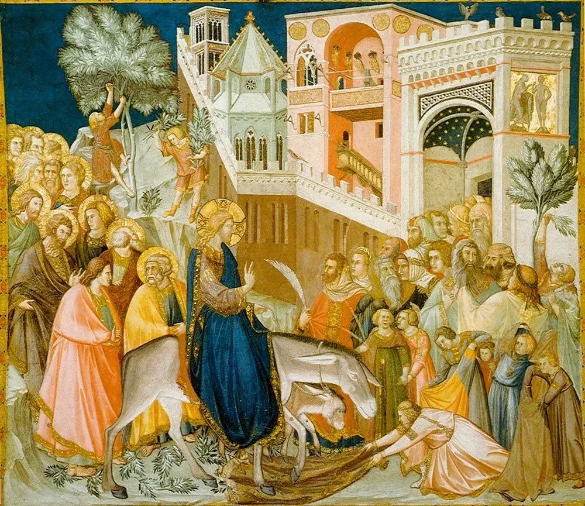
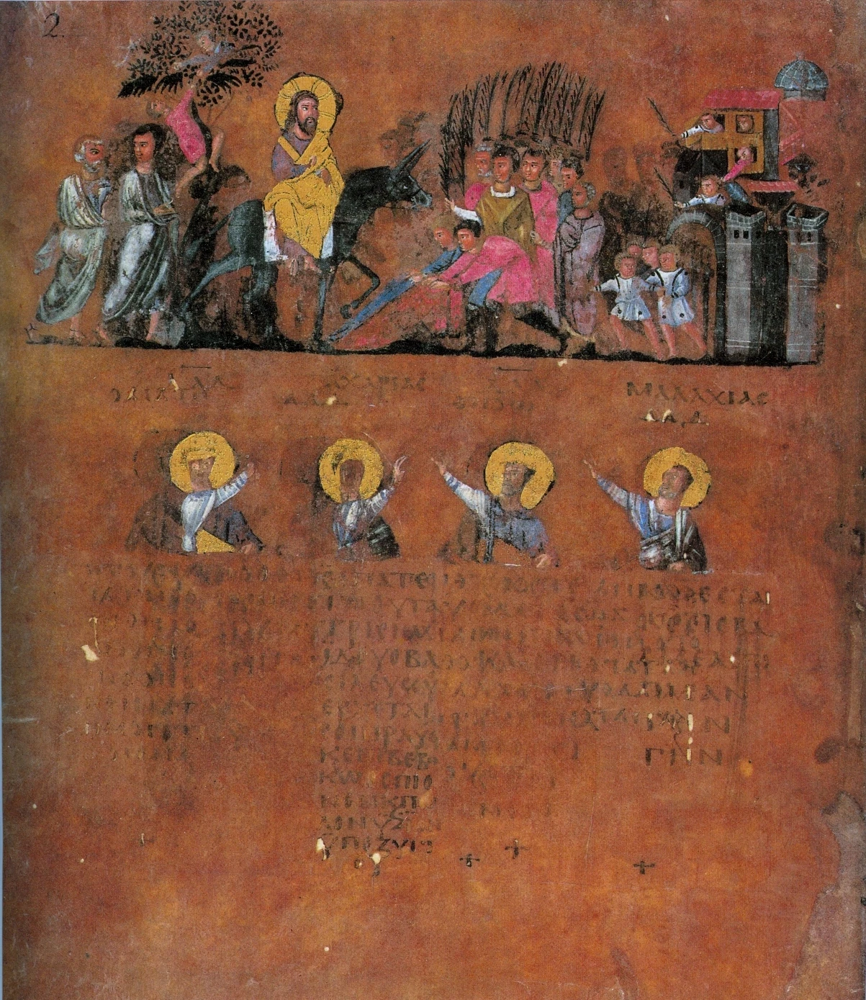
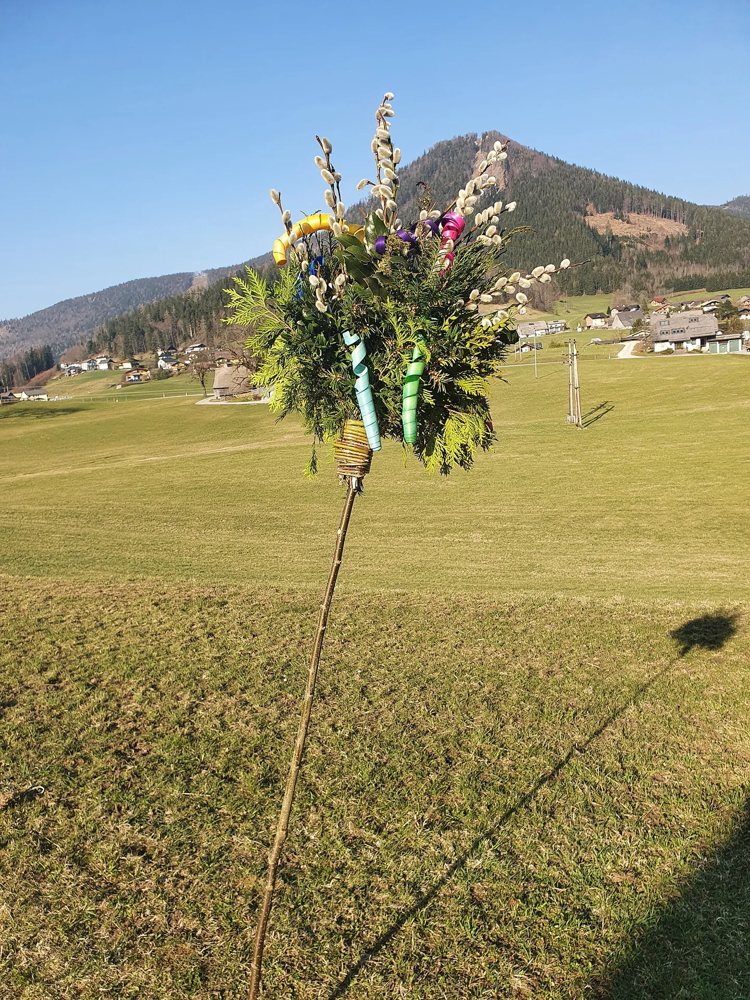
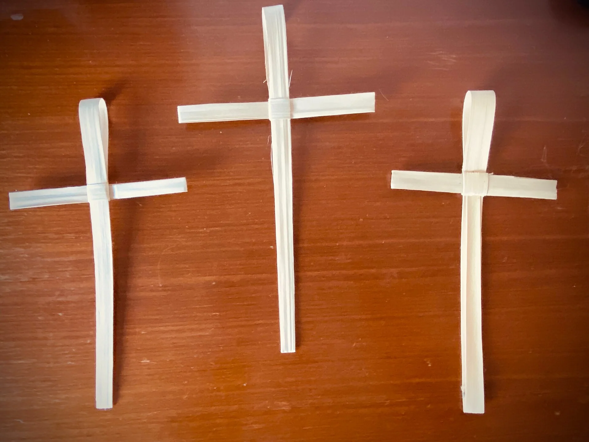

아직 펼치지 않은 카드거리로 나온 성주간 · 1종려 십자가 접기예수가 나귀를 타고 예루살렘에 들어갈 때, 사람들은 무엇을 흔들며 맞았을까요?사람들이 나뭇가지를 흔들며 예수님을 맞았대!
해마다 종려주일세계 여러 교회 · 4세기 예루살렘의 기록에서 오늘까지
종려 십자가 접기
종려주일이면 많은 교회가 축복한 종려 잎을 나눠 주고, 사람들은 그 잎을 접어 작은 십자가를 만들어요. 예수를 환영하며 흔들던 가지가, 며칠 뒤의 십자가를 떠올리게 하는 모양이 되는 거예요. 잎 한 장을 일곱 단계로 접어 보세요.
나뭇잎 한 장으로 십자가를 접을 수 있대! 단추를 누르며 같이 접어 볼까?
검수 전 시안이에요(기준서 1판). 장면에는 복음서와 4세기 순례 기록, 박물관과 교회·교구의 안내에 있는 것만 옮겼어요. 접는 그림은 이 안내서가 단순하게 줄여 그렸어요. 상상은 ‘눈 감고 상상해 보기’에만 썼어요.
시안 확인용카드 단계 미리 보기
1
1,500년 전 그림 속 가지
예수가 나귀를 타고 예루살렘에 들어갈 때, 큰 무리가 종려나무 가지를 들고 맞으러 나가 ‘호산나’ 하고 외쳤어요(요한복음 12장 12~13절). 다른 복음서에는 사람들이 겉옷과 나뭇가지를 길에 폈다고 나와요(마태복음 21장 8절).
이 그림은 5~6세기에 그리스어로 쓴 「로사노 복음서」의 한 쪽이에요. 자줏빛으로 물들인 양피지에 그렸고, 지금은 이탈리아 로사노의 교구 박물관에 있어요. 예수 앞에서 사람들이 몸을 굽혀 옷을 펴고, 그 뒤의 무리가 키 큰 종려 가지를 들었어요.

왼쪽 위 나무에는 가지를 꺾으려고 올라간 사람이 있어요. 앞면의 로렌체티 벽화보다 700년도 더 앞선 그림인데, 나무 위의 사람은 이때에도 있었어요.
1,500년쯤 전에 그린 그림이야. 나무 위에도 사람이 올라가 있어!
물어보기키 큰 종려 가지를 든 사람들을 찾아볼래?
2
4세기 예루살렘의 아이들
380년대에 예루살렘을 찾은 여성 순례자 에게리아는, 고향의 자매들에게 그곳의 예배를 자세히 적어 보냈어요. 성주간이 시작되는 주일, 사람들은 오후 한 시쯤 올리브산의 성당에 올라갔다가, 찬송을 부르며 예수가 하늘로 올라간 자리로 옮겨 갔어요.
오후 다섯 시쯤, 아이들이 가지를 들고 예수를 맞았다는 복음서를 읽어요. 그러고는 모두 걸어서 산을 내려와 도시를 지나 부활 성당까지 갔어요. ‘찬송하리로다, 주의 이름으로 오시는 이여’ 하고 노래로 화답하면서요.
“아직 걷지 못하는 어린아이는 부모가 목말을 태웠고, 모두 가지를 들었어요. 어떤 이는 종려 가지를, 어떤 이는 올리브 가지를.”
에게리아의 순례 기록 31장(380년대) · 라틴어 원문을 이 안내서가 옮김
사람들이 지치지 않도록 천천히, 천천히 걸어서, 날이 저물어서야 부활 성당에 닿았대요.
아기들도 엄마 아빠 목말을 타고 가지를 들었대!
물어보기목말을 타면 무엇이 보였을까?
3
잎 한 장, 일곱 단계
오늘날 종려주일이면 많은 교회가 축복한 종려 잎을 나눠 주고, 사람들은 그 잎을 접어 작은 십자가를 만들어요. 영국 셰필드의 세인트존스 교회가 나눈 접는 법을 일곱 단계로 묶어 그렸어요.
단추를 누를 때마다 잎이 한 단계씩 접혀요. 가운데에 작은 네모를 먼저 감고, 그 네모에 끝을 끼워 가며 윗동과 기둥, 두 팔을 만들어요. 잎이 없으면 폭 1~2cm쯤 되는 긴 종이 띠로 따라 접어 봐도 돼요.
단추를 누를 때마다 잎이 한 단계씩 접혀요. 빨간 화살표는 방금 한 손놀림, 점선은 뒤로 넘어간 부분이에요.
이 안내서가 그린 접는 차례 · 바탕: 영국 셰필드 세인트존스 교회가 나눈 접는 법(트윙클 자료, 10단계를 7단계로 묶음) · 손 모양은 단순하게 줄였고, 점선은 뒤로 넘어간 부분이에요
손안에 생긴 것
- 가운데 네모
- 윗동과 기둥
- 두 팔
일곱 번 접어 작은 십자가가 다 됐어요. 윗동은 짧고, 두 팔은 가지런하고, 기둥은 길어요.
잎 하나로 십자가를 접어. 단추를 누르며 같이 해 볼까?
물어보기가운데 네모에 끝을 몇 번 끼웠을까?
4
종려가 자라지 않는 곳에서
추운 곳에는 종려나무가 자라지 않아요. 그래서 중부와 북부 유럽에서는 버들강아지, 노간주나무, 자작나무 같은 가지가 종려 가지를 대신해 왔어요.
오스트리아 잘츠부르크 지방에서는 늘 푸른 가지를 적어도 일곱 가지 묶고 개암나무 막대를 단 ‘팔름부셴’을 만들어요. 종려주일에 교회로 들고 가 축복을 받은 뒤, 집 안에 세워 두거나 시골에서는 밭에 꽂아요.

종려나무가 없는 곳에서는 버들강아지 가지를 묶어 들고 가!
물어보기막대 위 다발에서 보송보송한 버들강아지를 찾아볼래?
5
한 해 뒤, 다시 처음으로
축복받은 가지와 십자가는 집에 두고 한 해를 보내요. 가톨릭 교회 등에서는 지난해 종려주일에 축복한 가지를 태워, 재의 수요일에 쓸 재를 만들어요.
오스트리아 린츠 교구도, 교회에 남겨 둔 팔름부셴을 태워 다음 해 재의 수요일에 이마에 긋는 재 십자가로 쓴다고 알려 줘요. 그리고 다시 종려주일이 오면, 사람들은 새 가지를 받아 들어요.

작년에 흔들던 가지를 태워서, 재의 수요일에 이마에 십자가를 그린대.
물어보기옛 그림의 가지와 사진의 십자가, 무엇이 닮았을까?
눈 감고 상상해 보기
교회 문 앞에서 받아 든 잎은 아직 촉촉하고, 손가락 사이로 풋풋한 풀 냄새가 나요. 접을 때마다 잎이 사각사각 소리를 내고, 가운데 작은 네모가 점점 단단해져요. 둘레에서 누군가 낮게 ‘호산나’를 노래해요.
눈을 감아 봐. 잎에서 풀 냄새가 나. 사각사각, 접을 때마다 소리가 나.
나의 자리
환호와 외면 사이에서, 나는 어떤 자리에 서 있었던 적이 있나요?
예수님을 맞으러 간다면 무엇을 흔들고 싶어?
마음에 닿는 한 줄을 고르거나 직접 써 보세요. 한 줄을 남기면 이 자리의 도장이 찍혀요. 이 기기에만 저장돼요.
더 깊이
궁금한 칸만 펼쳐 읽어도 괜찮아요.
알고 보면
요한복음의 종려 네 복음서 가운데 요한복음만 이 가지를 ‘종려나무 가지’라고 적어요. 마태복음은 ‘나뭇가지’, 마가복음은 ‘들에서 벤 나뭇가지’라고 해요(마가복음 11장 8절). 요한계시록에도 흰옷을 입고 손에 종려 가지를 든 큰 무리가 나와요(요한계시록 7장 9절).
자줏빛 복음서 「로사노 복음서」는 자줏빛으로 물들인 양피지에 쓴 그리스어 복음서예요. 그림은 모두 열네 장이고, 그 가운데 열두 장이 예수의 삶을 그렸어요. 라자로를 살린 일, 예루살렘 입성, 열 처녀의 비유 같은 장면이에요. 2015년 유네스코 세계기록유산이 되었어요.
팔름부셴의 가지들 무엇을 묶는지는 마을마다 달라요. 린츠 교구가 소개하는 옛 방식은 버들강아지·회양목·노간주나무·호랑가시나무·주목 같은 가지를 개암나무 막대에 감고 버드나무 가지로 묶는 거예요. 잘츠부르크 지방 관광청은 노간주나무·주목·호랑가시나무·측백·버들강아지·회양목처럼 늘 푸른 가지를 적어도 일곱 가지 묶는다고 알려 줘요.
기록마다 다른 점
접는 법 접는 법은 교회마다 조금씩 달라요. 이 카드는 가운데를 네모로 감는 법을 따랐어요(셰필드 세인트존스 교회가 나눈 트윙클 자료). 미국 덴버 대교구 신문은 끝을 비스듬히 감아 가운데에 X자를 만드는 법을 알려 줘요. 사진 속 초록 십자가들도 가운데를 비스듬히 감았어요.
무슨 가지였나 요한복음은 종려나무 가지라고 하고, 마태복음과 마가복음은 나뭇가지라고만 적어요. 에게리아가 본 4세기 예루살렘에서는 종려 가지와 올리브 가지를 함께 들었어요.
직접 해 보기
확인한 날 · 2026년 11월 18일 · 바뀌기 쉬운 정보라 정기적으로 다시 확인해요
잎이 없으면 폭 1~2cm쯤 되는 긴 종이 띠로 접어 봐요. 2027년 종려주일은 서방 교회(천주교·개신교) 3월 21일, 정교회 4월 25일이에요.
일곱 단계 끝까지 금박
잎을 일곱 단계 끝까지 접어 보면 카드에 금박이 입혀져요.
일곱 단계를 끝까지 접어 보기
아이와 함께 채색
아이와 함께 ‘영화처럼 보기’를 끝까지 보면 카드가 채색돼요.
아이와 함께 ‘영화처럼 보기’를 끝까지 보기
근거 보기 (11)
- 요한복음 12장 12~13절 · 마태복음 21장 8절 · 마가복음 11장 8절 · 요한계시록 7장 9절(개역개정) — 종려나무 가지, 겉옷과 나뭇가지
- 로사노 교구 박물관(Museo Diocesano e del Codex): 「로사노 복음서」 — 5~6세기, 자줏빛 양피지, 그림 14장 가운데 12장이 예수의 삶(예루살렘 입성 등), 로사노에 보관
- 로사노 복음서 공식 누리집(Codex Purpureus Rossanensis): 유네스코 — 2015년 10월 9일 세계기록유산 등재
- 에게리아 순례 기록(라틴어 원문, The Latin Library) 31장 1~4절 — 일곱 번째 시간 올리브산, 열한 번째 시간 복음 낭독, 걸어서 부활 성당까지, 목말 탄 아이들의 종려·올리브 가지, 천천히 걸어 저물녘 도착
- 페르세우스 카탈로그(브릴 『신 파울리』 인용): 에게리아 — 4세기 말(아마 381~384년) 성지를 여행한 여성 순례자, 고향의 자매들을 위해 씀
- 트윙클 「Palm Cross Craft Instructions」(영국 셰필드 세인트존스 랜무어 교회가 나눈 자료) — 열 단계 접는 법
- 덴버 대교구 신문(Denver Catholic): 종려 잎으로 십자가 접기 — 끝을 비스듬히 감는 열 단계
- 린츠 교구: 팔름부셴 — 기후 때문에 버들강아지 등으로 대신함, 개암나무 막대에 감고 버드나무로 묶는 옛 방식, 집과 밭에 둠, 교회에 남긴 것은 태워 다음 해 재의 수요일 재로
- 잘츠부르크 지방 관광청(SalzburgerLand): 팔름부셴 — 늘 푸른 가지를 적어도 일곱 가지(노간주나무·주목·호랑가시나무·측백·버들강아지·회양목), 개암나무 막대, 종려주일에 교회에서 축복
- 가톨릭 백과사전(1907) 「재의 수요일」 — 지난해 종려주일에 축복한 종려를 태워 재를 만듦
- 브리태니커 「종려주일」 — 일부는 이듬해 태워 재의 수요일 재로 씀
그림·사진·소리 출처
‘처음 만나는 기독교 문화’의 깊은 카드예요. 카드 단계와 남긴 글은 이 기기에만 저장돼요.